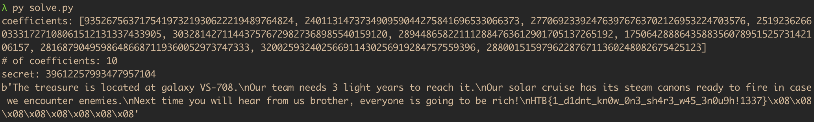

Space Pirates [Easy]
Hack the Box CTF 2021 [Qualifiers]
Jones and his crew have started a long journey to discover the legendary treasure left by the guardians of time in the early beginnings of the universe. Mr Jones, though, is wanted by the government for his crimes as a pirate. Our agents entered his base and discovered digital evidence about the way captain Jones contacts with his closest friends back home. We managed to get his last message, sent to his best friend. Could you help us decrypt it?
Initial analysis
Loading the file up, we immediately notice that it’s an implementation of the Shamir Secret Sharing scheme. £5 say it’s going to be the infamous Bitcoin Armory exploit. So let’s look at how the coefficients are being generated!
def next_coeff(self, val):
return int(md5(val.to_bytes(32, byteorder="big")).hexdigest(),16)
def calc_coeffs(self):
for i in range(1,self.n+1):
self.coeffs.append(self.next_coeff(self.coeffs[i-1]))
Okay, it actually is that. Amazing. The problem with this coefficient generation is that it is deterministic. In other words, we know that $\forall i$:
\begin{align*}
c_i &= md5(c_{i-1}) \\
c_{i-1} &= md5(c_{i-2})\\
&\,\,\,\vdots\\
c_{2} &= md5(c_{1})\\
c_{1} &= md5(c_{0}) = md5(secret).\\
\end{align*}
or, chaining everything together,
$$
c_i = md5(c_{i-1}) =md5^2(c_{i-2})= …=md5^{i-j}(c_j).
$$
for some $j \in \mathbb{N}^*$, $j < i$. What this means in other words is that if we know a coefficient $c_j$ of the polynomial, we know all that come after it (i.e., $c_{j+1}, c_{j+2}, …, c_{i}$).
So for our SSS polynomial
$$
\begin{equation}
\tag{1}
y \equiv c_0+c_1x+c_2x^2+…+c_kx^k \pmod p,
\end{equation}
$$
we seem to be provided with a $67$-bit prime $p = 92434467187580489687$ and the polynomial degree $k = 9$ (not the amount of shares needed $k = 10$, as we are indexing from $0$). Loading up msg.enc and cross-checking what is actually being printed there through the source file, we notice that we’re also given the polynomial coefficient
$$
c_1 = 93526756371754197321930622219489764824,
$$
and
$$
(x, y) = (21202245407317581090, 11086299714260406068),
$$
a SSS share that represents a point on the polynomial, i.e. two values that satisfy $(1)$.
Wait a second.
Attack
Remember when I said that if we know a coefficient, we basically know all that come after it? Well, we know $c_1$. That means that in the polynomial $(1)$, we know all of the coefficients that come after it, too. In other words, the only coefficient that we do not know is $c_0$.
But wait a second again. We are given the prime $p$ and a share $(x, y)$ that satisfies $(1)$. So, in $(1)$, $c_0$ is the only variable that we do not know. So we can simply solve for it! $$ \begin{align} \tag{2} y \equiv c_0+c_1x+c_2x^2+…+c_kx^k \pmod p \\ \iff c_0 \equiv y-c_1x-c_2x^2-…-c_kx^k \pmod p, \end{align} $$ where we know everything on the RHS. So all that we have to do is calculate the coefficients $c_2 = md5(c1)$, $c_3 = md5(c_2)$, …, $c_k = md5(c_{k-1})$, and evaluate the RHS modulo $p$ to find the secret $c_0$. We can then use it to decrypt the message, and solve the challenge.

I want my £5.